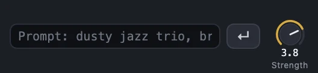
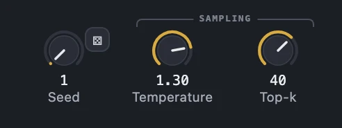
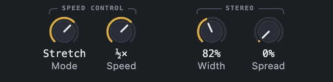
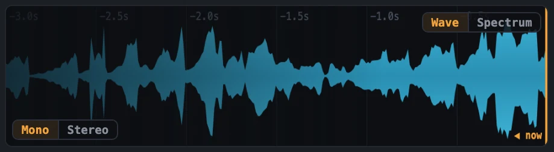
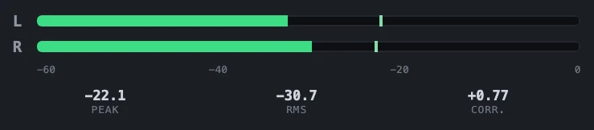
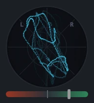

The model
The default engine is Magenta RealTime 2 small, in 8-bit on Apple's MLX. It is an autoregressive transformer over audio tokens: each step it writes the tokens of one 40 ms frame, reading the frames it has written and a style embedding of the prompt, and its codec, SpectroStream, turns the tokens into 1,920 samples of 48 kHz stereo. The transformer has twelve layers, and the stream of numbers that runs through them is 1,024 wide; that stream is where Steer and the Model layers act.
 Zoom
Zoom
A preset is a prompt with a name: twenty-five of them in six groups (ambient, electronic, beats, acoustic, orchestral, experimental). A style typed in the Prompt box is made into the model's style tokens in about 90 ms and played, or switched to while playing, and kept under Your prompts. On an Apple M5 a step takes about 25 ms against the 40 ms the frame lasts.
MusicGen small (Meta) is a second engine, chosen from the menu in the panel's header: 32 kHz mono through its EnCodec codec, with Steer and without the model-layer units, answering a move in about 285 ms. Everything else on this page is Magenta RT 2.
Strength, seed and sampler
At each step the model gives a likelihood to every token it could write next, and the sampler draws one. Three knobs shape the draw, and their defaults are Magenta's own.
Strength (3.0), the small knob beside the Prompt box, sets how strongly the prompt steers the choice: it is the model's guidance, its weight on the style conditioning, and it acts on a preset's prompt as on a typed one. Temperature (1.30) flattens the likelihoods above 1 and sharpens them below, so the music wanders more or settles. Top-k (40) lets only the k likeliest tokens be drawn; the two sit together under the SAMPLING bracket. Strength and Temperature act from the next frame and take modulation; Magenta RT 2 passes guidance as conditioning tokens, so a move costs nothing.
Seed fixes the draws. The same seed with the same settings and moves gives the same sound, sample for sample, which is how a saved sound's recipe replays it exactly. The seed takes effect at the next ▶; the die picks one at random.




The draw, sketched. Twenty made-up tokens stand for the model's thousands; the likelihoods are drawn, not the model's numbers. Strength pulls the shares toward what the style favours, Temperature flattens or sharpens them, and Top-k leaves the rest out of the draw.
Frame by frame
The engine runs in its own process and keeps a few frames ahead of the sound card: the Buffer on the Output panel, two frames (80 ms) by default. A move is applied to the next frame the model writes, and heard when that frame reaches the card. With two frames ahead and the card's own 22 ms, that is about 102 ms; a measured move took 107 ms.
A shorter buffer answers sooner and drops out when a step runs long. The top bar shows GPU load, the time the slowest steps take as a share of the 40 ms frame (over 100% the model is falling behind), and CPU load, the share of the processor the instrument uses. The step loop runs as user-interactive work on macOS, and Python's garbage collector is kept off the loaded model, whose full collections had grown to 99 ms. What a dropout sounds like, and how it is covered, is on the Output page.
Speed
Speed plays the model's sound slower, down to an eighth. It sits between the model and the output section, and Mode sets how it slows the sound. The two knobs sit under the Engine's scope, beside Width and Spread, the other controls that act on what the model has already written. While Mode is Off, Speed is dimmed and keeps its value.
- Off plays at 1× and leaves the Speed knob where it is, so a setting can be switched in and out.
- Tape reads the sound slower, as a slowed tape: every cycle lasts longer, so the pitch falls with the speed, an octave at ½×. It reads between samples by a cubic (Catmull-Rom) curve.
- Stretch keeps the pitch: a phase vocoder of 2,048-sample Hann windows at a quarter overlap, with the phases locked around each spectral peak (after Laroche and Dolson), so a note lasts longer without falling.
- Smear keeps the pitch and washes the detail out, after Paul Nasca's Paulstretch: 16,384-sample (0.34 s) windows whose magnitudes are kept and whose phases are drawn afresh, from a generator seeded by the window's number. It suits very slow ambient.


Three ways to slow a sound, sketched. The waveforms are drawn from the rules each mode follows, not recorded. The shaded part of the upper lane is what one second of output reads.
The model writes only as fast as its sound is used: at ½× it writes 12.5 frames a second instead of 25, so a slow setting also lightens the load. A change of speed glides over a few hundredths of a second, and a change of mode is taken once the new mode has the sound it needs ahead. The stage works in fixed chunks of 256 samples whatever block the sound card asks for, and each change is recorded with the sample it was taken at, so a saved sound replays its speed exactly, to the bit.
Meters
The right side of the Engine panel shows what is heard. The scope draws the last three seconds: as a waveform (Wave), the model's sound as played, after Speed and before the output section; as a spectrogram (Spectrum), what reaches the sound card, in the colours of the Listen view. The channel meters, like the stereo field, read what reaches the sound card: left and right with a tick at each one's peak, and below them the peak, the RMS level and the correlation between the channels. Mono and Stereo choose whether the scope draws one trace or two. The round stereo field plots left against right: a vertical line is mono, a cloud is wide, and the bar under it is the correlation, green toward +1, red toward −1, where the channels cancel in mono.






Width and Spread act in the output section, after the effects; they are described on the Output page.